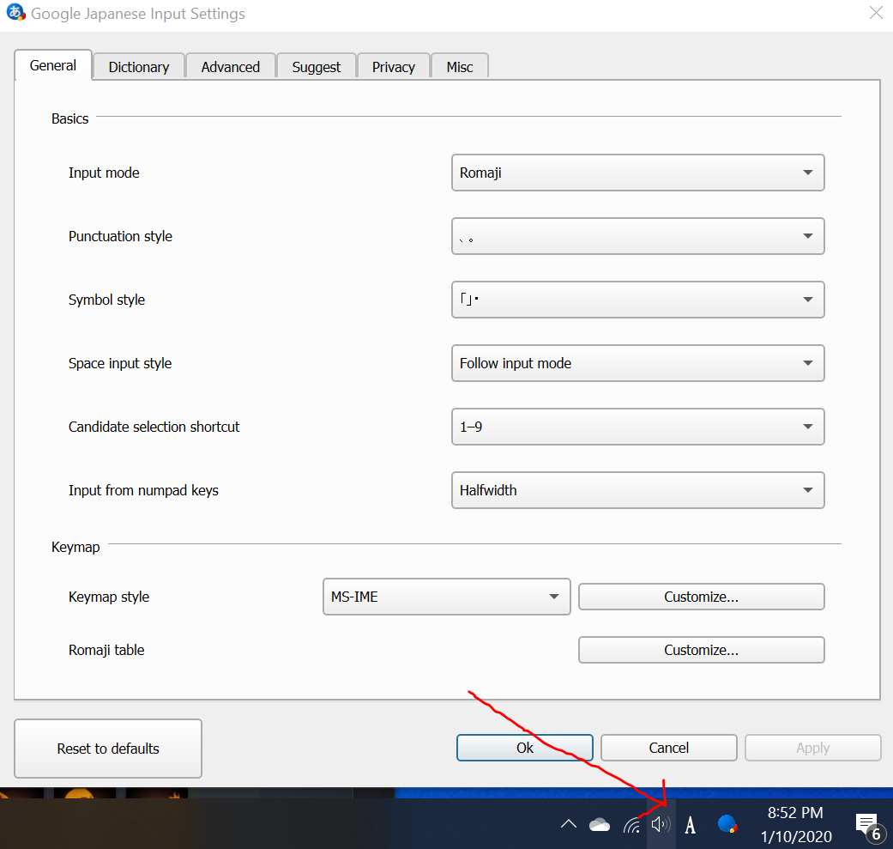

Google's Japanese IME offers more options than the default Windows setup. Among other things, you can set up some custom keys.
To begin, go to Google's Japanese IME download page. Click stuff, agree to terms, etc. More than half of the instructions that pop up should be in English, so even if your Japanese reading isn't so advanced, you should be fine.
After going through the defualt install process, you should be able click in the bottom right of your screen to toggle input methods. I left the default SUPER+SPACE bindings for changing input methods (not sure if this can even be changed).
Right click on the Japanese IME input stuff on the bottom right of your screen... you should find options to tweak stuff.
